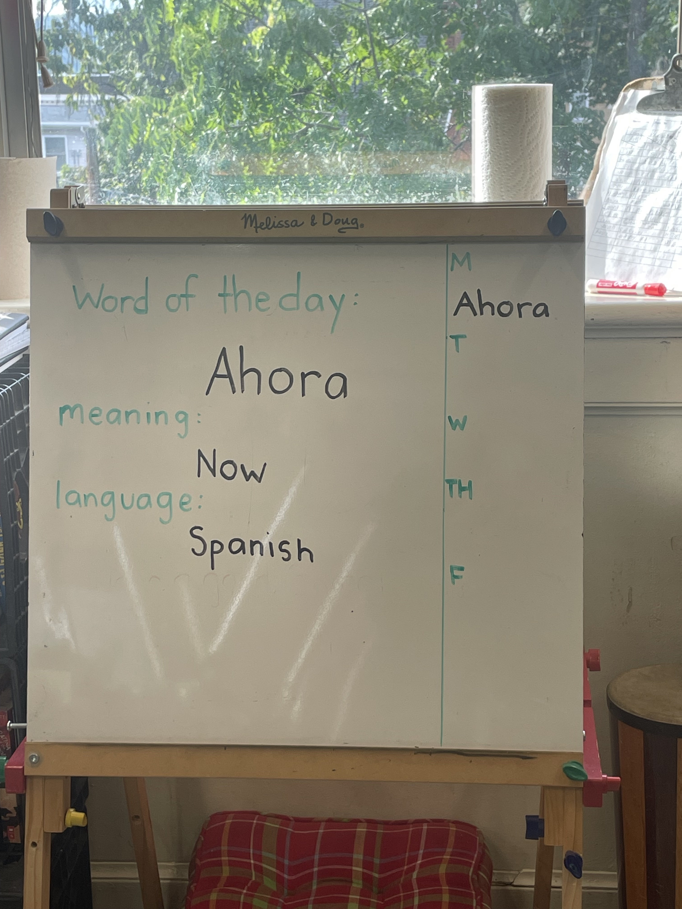
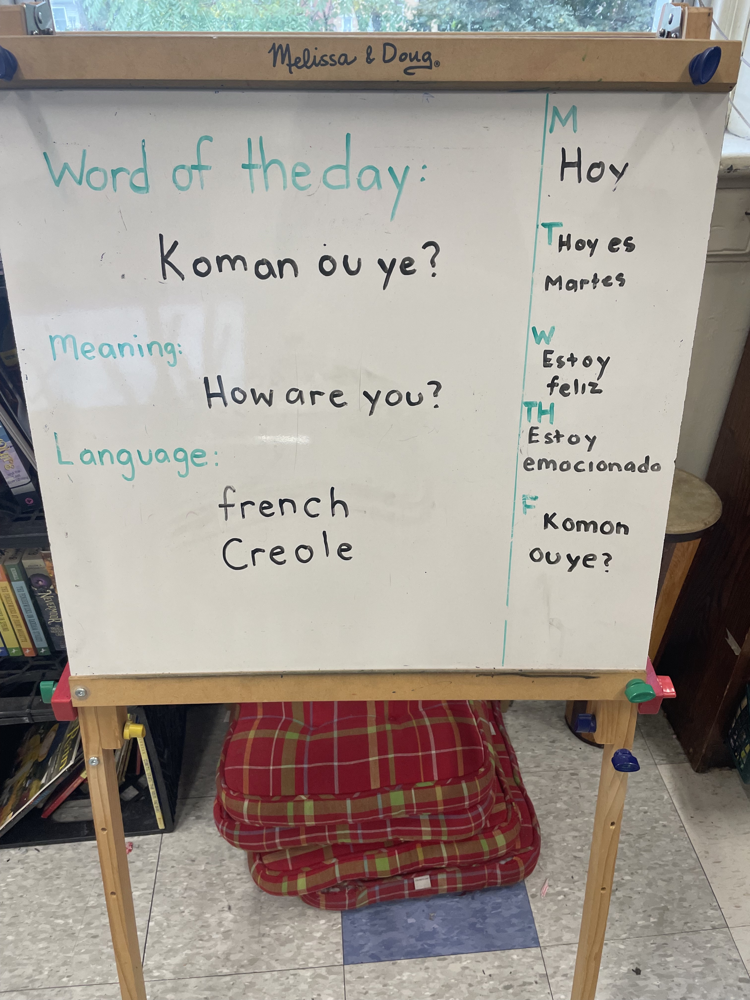
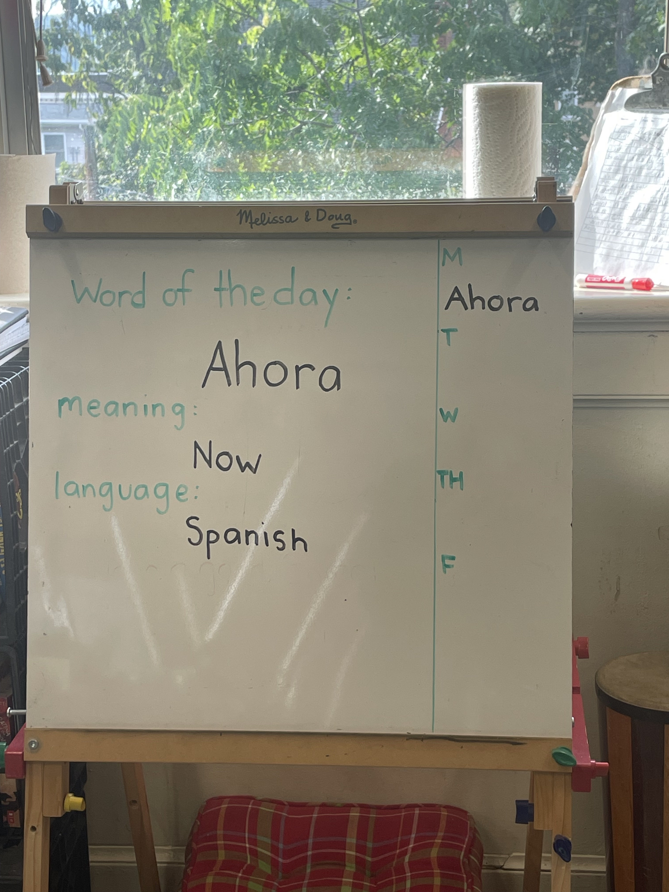
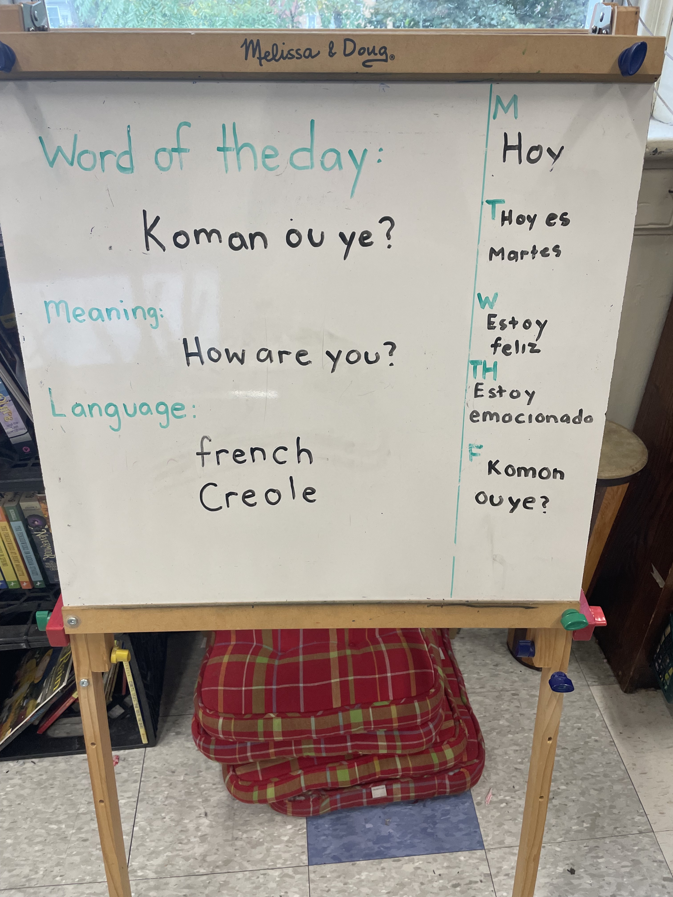

Within the school's curriculum, there's limited room to incorporate my or my students' identities and interests into our learning. Often, the readings from our workbook are met with groans, as my students do not feel represented in these texts. By sharing words and languages that hold significance for my students, my cooperating teacher and I strive to become more culturally responsive while fulfilling our obligations. Regarding my decision to teach my students Spanish, I am not Latina, but I grew up speaking Spanish every day with my godmother (who is from Guatemala) and my mother (who learned Spanish in high school and college). Three of my students speak Spanish at home and assist me in teaching their classmates in the mornings. This allows me to share a part of myself with my students and enables them to communicate with peers who speak Spanish as their first language within the building.
On Fridays, my students help to teach a word in a language they are familiar with. They take on the role of teaching their classmates while I provide support. This is a way for students to share their own knowledge. They present the phrase, we repeat it as a class, and they explain its usage and why they chose that particular word or phrase to share with us. Several of my students have family in Jamaica or have immigrated from Jamaica and speak Patois at home. Often my students chose to teach patois phrases to our class. Throughout the school day, my students and especially myself often forget to continue using the phrases or words we learned in the morning. Due to our demanding schedule, there are also days when we are unable to cover the word or phrase of the day. Having a running list posted in the classroom might help remind us to use the phrases we learn. I hope to continue this practice in my own classroom. Making space for multiple cultures and languages in the classroom is essential to creating a community where students feel comfortable and welcome
 


